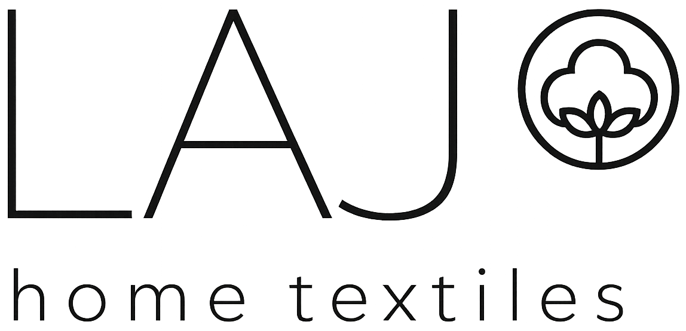
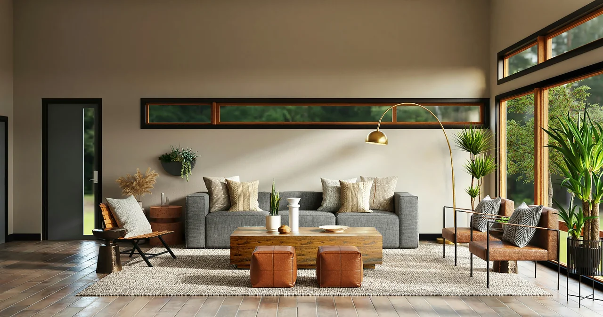

Loading...

THE STRATEGIC ASCENT
A deliberate evolution from a local procurement facilitator into an internationally recognized, vertically integrated textile supply chain architect, operating with structured governance, auditable compliance protocols, and end-to-end logistics mastery.
LAJ Group emerged in Faisalabad in the early 2000s with a focused mission: enabling international buyers to access high-quality textile raw materials with efficiency and trust. These formative years built deep supplier networks and established resilient trade execution capabilities within Pakistan’s textile ecosystem.
By 2005, we transcended a transaction-driven model and institutionalized structured sourcing systems, ISO-aligned quality frameworks, vendor scorecards, and risk-based evaluation mechanisms—embedding compliance as a core operational principle rather than a procedural requirement.
Today, LAJ Group operates as a multidimensional sourcing and supply chain consortium, integrating procurement strategy, production oversight, and independent quality assurance under a unified governance model. Our portfolio spans home textiles and apparel, covering everything from luxury bedding and terry towels to activewear, knitwear, and woven garments.
Built on total transparency, end-to-end material traceability, and long-term commercial resilience, we serve global markets across Asia, Africa, the Middle East, and Latin America—supporting high-growth economies with scalable, compliant, and reliable textile supply solutions.
INTERNATIONAL OPERATIONS
We maintain a tightly controlled export framework ensuring regulatory alignment, pricing consistency, and dependable shipment execution across global destinations. Each consignment is backed by complete trade documentation including Bills of Lading, Certificates of Origin, commercial invoices, and export declarations under FOB and CNF arrangements.
This disciplined structure enables stable international trade flows with minimized compliance risks, controlled pricing behavior, and reliable logistics performance.
Our sourcing ecosystem is built on systematic vendor qualification, evaluating production strength, quality performance history, compliance adherence, and financial stability prior to onboarding.
Capacity is strategically matched with order requirements through a structured allocation model, ensuring optimized production flow, full traceability, and operational continuity.
This approach creates a resilient and transparent supply chain capable of maintaining stability, visibility, and uninterrupted execution even under fluctuating market conditions.
WHY LAJ
LAJ Group has transformed from a local raw material sourcing facilitator in Faisalabad (early 2000s) into a fully integrated textile supply chain organization. Today, we manage procurement, production coordination, and quality assurance under one unified framework, shifting from transactional trade to strategic, governance-driven partnerships.
We operate across two primary verticals: Home Textiles including bedding sets, terry towels, blackout curtains, woven throws, and upholstery; and Apparel including casual wear, activewear, knitwear, woven garments, and core basics.
It means we oversee every stage of the supply chain—from fiber sourcing and mill coordination to production scheduling, quality inspections, and final shipment—giving clients a single point of accountability and reducing supply chain risks.
LAJ Group primarily serves the Rest of the World (RoW), focusing on high-growth regions across Asia, Africa, the Middle East, Latin America, and other emerging markets, supported by tailored logistics and compliance frameworks.
Compliance is embedded into our core operations through ISO-aligned systems, vendor scorecards, risk-based evaluations, and ethical sourcing protocols. Every partner is regularly audited to ensure alignment with international standards.
We maintain full traceability from raw material sourcing through spinning, weaving, dyeing, finishing, and final assembly. This end-to-end documentation ensures transparency, verification of sourcing claims, and reliable production accountability.
Our differentiation lies in structured governance, a focused Rest of the World strategy, and transformation from a trading intermediary into a fully integrated supply chain partner offering traceability, reliability, and unified operational control.